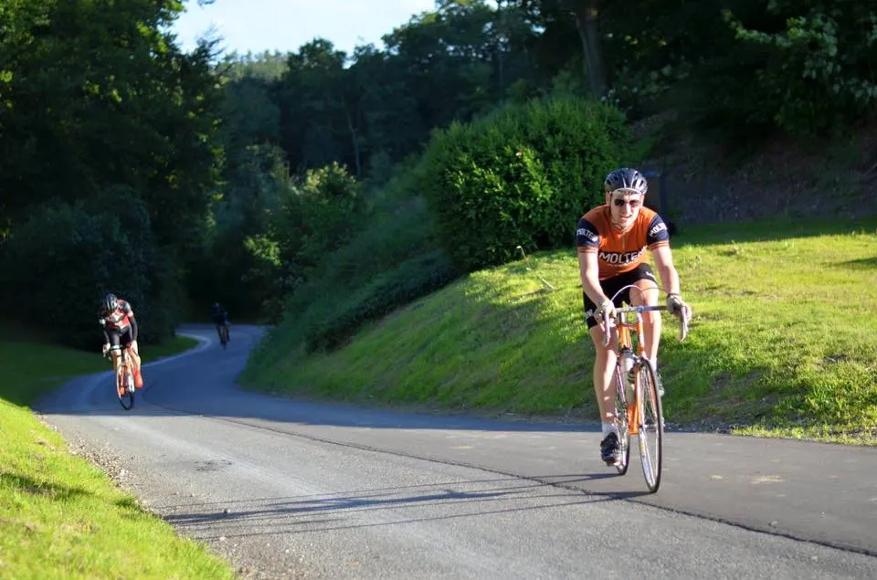
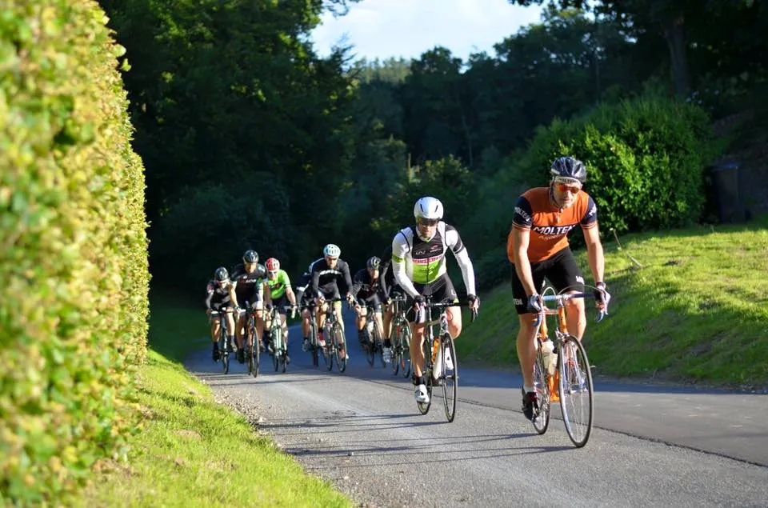

Beretning fra Det Østjyske Bakkeløb: Onsdagsoptimisme og dårlige ben

I går aftes var et par hundrede ryttere fra den danske elite, semiprofessionelle og motionsrækkerne samlet i Harlev, lidt uden for Aarhus, for afgøre Det Østjyske Bakkeløb 2016 (DØB16) mellem sig.
Det skulle vise at blive en lungebasker af et løb. Squadra Moteni stillede med supersprinter, Grane Maaløe, og løjtnant, Kasper Sørensen.
Ruten på 60 kilometer, og de ca 600 højdemeter, snoede sig frem og tilbage i sløjfer omkring Harlev og Stjær, med et lille smut forbi Borum Eshøj. Vejrudsigten sagde stiv storm fra vest.
Onsdagsoptimisme: Vi starter i den hurtige gruppe
Startfelterne var opdelt i elite, 36+, 32-36 og 28-32 (Fart. Ikke alder). Kasper og Grane stilte sig godt til rette forrest i 32-36 feltet. Men pludselig, som et lyn fra en klar himmel, blev de begge – helt synkront – ramt af den velkendte onsdagsoptimisme.
Den som rammer halvvejs i arbejdsugen, når udsigten til fredagens fyraftens fad endelig står klarere end mandagens møre morgenkaffe. Og manglen på en disciplineret holdkaptajn var igen pinligt tydelig, da de trillede lydløst frem i 36+ feltet.
I mangel på tilstedeværelsen af en disciplineret holdkaptajn, var opvarmningen blevet udskudt og forkortet. 43 sekunder var blevet brugt på en velopmålt rekognoscering af opløbsstrækningen.
Dårlig skiltning: Alle kørte forkert
De første 15 kilometer løb afsted med 40 km./t. Det blev heldigvis bedre, da ruten (og skiltningen) blev så uomtvistelig svær at regne ud, at alle begyndte at køre forkert.
Grane og Kasper kørte hver sin vej, men fandt begge nogen utroligt usolidariske felter, som kørte sidevindskørsel uden vifte.

Et slemt planlagt gearskifte betød Grane tabte sin gruppe på bakken efter Storring.
Kasper holdt fast på bagsmækken af sin gruppe til den gamle gravhøj; Borum Eshøj (hans nemesis fra Ronde Van Borum). Men denne gang ville han selv grave sin grav. Fuld skrue i front indtil han eksploderede halvvejs oppe.
På toppen passerede han præsten og Helligånden uden at hilse, men 3 kilometer senere ventede skriftestolen i vejkanten sammen med en krampe.
Det blev en ensom trilletur til mål, hvor arrangørerne dog havde fået tændt godt op i grillen med pølser og brød.

Kasper og Grane kom ind som nummer 100 og 109 i tiden 1:45 og 1:50.
Bortset fra lidt problemer med ruteanvisninger undervejs, var det et super godt løb. Gode startfelter, masterbil, grilpølser, tidtagning og sikkerhed i top.
Arangørerne havde på forhånd opfordret deres Facebookbrugere til at hente ruten ned på deres Garmin fladskærm, for at undgå at fare vild.